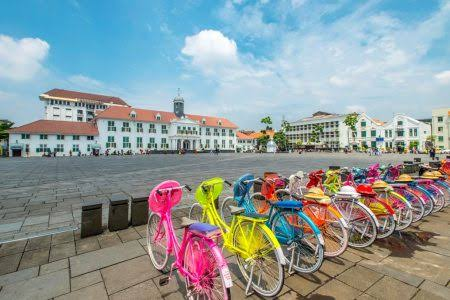
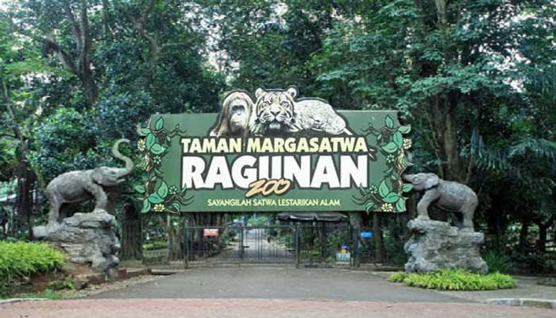
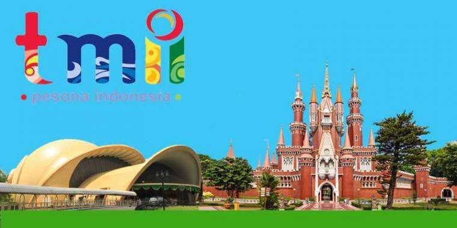
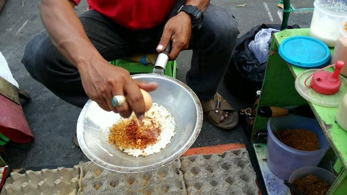

Sejarah

Jakarta adalah ibu kota dan kota terbesar Indonesia. Terletak di estuari Sungai Ciliwung, di bagian barat laut Jawa, daerah ini telah lama menopang pemukiman manusia. Bukti bersejarah dari Jakarta berasal dari abad ke-4 M, saat ia merupakan sebuah permukiman dan pelabuhan Hindu. Kota ini telah diklaim secara berurutan oleh kerajaan bercorak India Tarumanegara, Kerajaan Sunda Hindu, Kesultanan Banten Muslim, dan oleh pemerintahan Belanda, Jepang, dan Indonesia.[1] Hindia Belanda membangun daerah tersebut sebelum direbut oleh Kekaisaran Jepang semasa Perang Dunia II dan akhirnya menjadi merdeka sebagai bagian dari Indonesia.
Jakarta telah dikenal dengan beberapa nama. Ia disebut Sunda Kelapa selama periode Kerajaan Sunda dan Jayakarta, Djajakarta, atau Jacatra selama periode singkat Kesultanan Banten. Setelah itu, Jakarta berkembang dalam tiga tahap. "Kota Tua Jakarta", yang dekat dengan laut di utara, berkembang antara 1619 dan 1799 pada era VOC. "Kota baru" di selatan berkembang antara 1809 dan 1942 setelah pemerintah Belanda mengambil alih penguasaan Batavia dari VOC yang gagal yang sewanya telah berakhir pada 1799. Yang ketiga adalah perkembangan Jakarta modern sejak proklamasi kemerdekaan pada 1945. Di bawah pemerintahan Belanda, ia dikenal sebagai Batavia (16191949), dan Djakarta (dalam bahasa Belanda) atau Jakarta, selama pendudukan Jepang dan masa modern
Wisata
Kebun Binatang Ragunan

Kebun Binatang Ragunan adalah kebun binatang pertama di Indonesia. Kebun binatang ini didirikan pada tahun 1864 dengan nama Planten En Dierentuin yang berarti "Tanaman dan Kebun Binatang." Terletak pada tanah seluas 10 hektare di kawasan Cikini, Menteng, Jakarta Pusat yang merupakan pemberian Raden Saleh. Saat itu, Planten En Dierentuin dikelola oleh Perhimpunan Penyayang Flora dan Fauna Batavia yang tergabung dalam Culturule Vereniging Planten en Dierentuin at Batavia.[2]
Tahun 1949, nama Planten En Dierentuin diubah menjadi Kebun Binatang Cikini dan pada tahun 1961 dipindahkan ke kawasan Ragunan, Pasar Minggu, Jakarta Selatan pada tahun 1964. Pemerintah DKI Jakarta menghibahkan lahan seluas 30 hektare yang menjadi rumah bagi kebun binatang ini. Gubernur DKI Jakarta Ali Sadikin meresmikan Taman Margasatwa Ragunan pada 22 Juni 1966. Kebun Binatang Ragunan adalah sebuah kebun binatang yang terletak di daerah Ragunan, Pasar Minggu, Jakarta Selatan, Indonesia. Kebun binatang seluas 140 hektare ini didirikan pada tahun 1864. Di dalamnya, terdapat berbagai koleksi yang terdiri dari 295 spesies dan 4040 spesimen.
Ragunan sempat ditutup selama sekitar tiga minggu sejak 19 September 2005 karena hewan-hewan di dalamnya ada yang terinfeksi flu burung, tetapi dibuka kembali pada 11 Oktober 2005.[1]
Kebun binatang ini memiliki banyak spesies hewan yang langka antara lain kakatua, orangutan, gorila, anoa, dan gajah
Taman Mini Indonesia Indah

Taman Mini Indonesia Indah (TMII) merupakan suatu kawasan taman wisata bertema budaya Indonesia di Jakarta Timur. Area seluas kurang lebih 150 hektare[1] atau 1,5 kilometer persegi ini terletak pada koordinat 6°18'6.8"LS,106°53'47.2"BT. Taman ini merupakan rangkuman kebudayaan bangsa Indonesia, yang mencakup berbagai aspek kehidupan sehari-hari masyarakat 26 provinsi Indonesia (pada tahun 1975) yang ditampilkan dalam anjungan daerah berarsitektur tradisional, serta menampilkan aneka busana, tarian, dan tradisi daerah. Di samping itu, di tengah-tengah TMII terdapat sebuah danau yang menggambarkan miniatur kepulauan Indonesia di tengahnya, kereta gantung, berbagai museum, dan Teater IMAX Keong Mas dan Teater Tanah Airku), berbagai sarana rekreasi ini menjadikan TMIII sebagai salah satu kawasan wisata terkemuka di ibu kota.
Gagasan pembangunan suatu miniatur yang memuat kelengkapan Indonesia dengan segala isinya ini dicetuskan oleh Ibu Negara, Siti Hartinah, yang lebih dikenal dengan sebutan Ibu Tien Soeharto. Gagasan ini tercetus pada suatu pertemuan di Jalan Cendana no. 8 Jakarta pada tanggal 13 Maret 1970. Ide pebuatan miniatur Indonesia ini bangkit setelah Ibu Negara mendengarkan dan menghayati isi pidato Presiden Soeharto tentang keseimbangan pembangunan umum DPR GR Tahun 1971. Selain itu, beliau juga sering menyertai Presiden mengunjungi negara-negara sahabat dan melihat obyek-obyek wisata di luar negeri. Sehingga bangkit gagasan untuk membangun taman rekreasi yang menggambarkan keindahan dan keberagaman Indonesia. Melalui taman rekreasi ini, diharapkan dapat membangkitkan rasa bangga dan rasa cinta tanah air pada seluruh bangsa Indonesia.[2] Maka dimulailah suatu proyek yang disebut Proyek Miniatur "Indonesia Indah", yang dilaksanakan oleh Yayasan Harapan Kita.
TMII mulai dibangun tahun 1972 dan diresmikan pada tanggal 20 April 1975. Berbagai aspek kekayaan alam dan budaya Indonesia sampai pemanfaatan teknologi modern diperagakan di areal seluas 150 hektare. Aslinya topografi TMII agak berbukit, tetapi ini sesuai dengan keinginan perancangnya. Tim perancang memanfaatkan ketinggian tanah yang tidak rata ini untuk menciptakan bentang alam dan lansekap yang kaya, menggambarkan berbagai jenis lingkungan hidup di Indonesia
Makanan
Kerak Telor

Kerak telur adalah makanan asli daerah Jakarta (Betawi), dengan bahan-bahan beras ketan putih, telur ayam, ebi (udang kering yang diasinkan) yang disangrai kering ditambah bawang merah goreng, lalu diberi bumbu yang dihaluskan berupa kelapa sangrai, cabai merah, kencur, jahe, merica butiran, garam dan gula pasir. Kerak telor dapat ditemukan pada hari biasa. Anda bisa menemukan kerak telor di sekitar Kota Tua, Jakarta Barat. Menurut sejarah, Kerak Telor sudah ada dari zaman kolonial Belanda, kerak telor diciptakan oleh masyarakat Betawi secara tak sengaja Pada tahun 1970an .[1]Makanan ini dihidangkan saat pesta dan hajatan besar para pembesar pada masa itu. Semakin bergulirnya waktu, kehadiran kuliner-kuliner barat menggeser pesona kerak telor ini